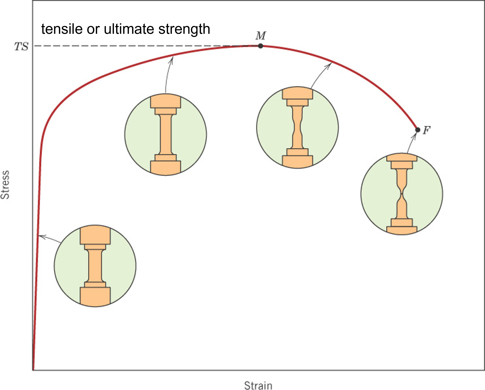

Video Lessons
Stress & Strain
Linear elastic
Force curves
Temperature dependence
Poisson's ratio
Elastic Modulus
Real data
Hardness testing
Mechanical behavior refers to how materials respond to external forces. Understanding these properties helps engineers design safe and reliable structures. The key factors influencing mechanical behavior include:
The video to the right shows the tensile testing of an elastic-plastic material. Notice at the end of the video how the sample "necks" just prior to failure.
Tensile test on an A36 steel rod at 3x speed.
Stress & Strain
Linear elastic
Force curves
Temperature dependence
Poisson's ratio
Elastic Modulus
Real data
Hardness testing
 Lateral Strains: The
strain experienced in the perpendicular
direction relative to the applied stress, for example:
Lateral Strains: The
strain experienced in the perpendicular
direction relative to the applied stress, for example: In this course, "Hooke's law" will always refer to the stress-strain form, i.e. the generalized form.
How good is this relationship? Try using the Granta EduPack software for database level 2 or level 3 and plot the shear modulus on the y-axis and the equation, \(\frac{E}{2(1+\nu)}\) on the x-axis.
Most nano-indentation machinces offer methods of imaging the surface and placing indentations in precise locations to test microstructural features.
Hardness tests require very little sample preparation and setup as compared to performing a tensile test. By correlating hardness with either tensile strength or yield strength for a given family of materials, indentation testing becomes a rapid, reliable and low cost method of quality control.
The figure below shows the correlation between Brinell hardness and tensile strength for brass, steel, and cast iron.

Stress-strain curve on representative elastic-plastic material.
Stress-strain curve of cast iron.
Materials exhibit different behaviors in stress-strain tests:
Young’s Modulus (E): This is calculated as the slope of the linear portion of the stress-strain curve:
\[ E = \frac{\Delta \sigma}{\Delta \varepsilon} \]
where \( \Delta \sigma \) is the change in stress and \( \Delta \varepsilon \) is the corresponding change in strain within the elastic region.
Yield Strength (\( \sigma_y \)): This is determined using the 0.002 offset method. A line is drawn parallel to the elastic region with an offset strain of 0.002. The point where this line intersects the stress-strain curve is the yield strength.

Stress-strain curve on a high strength aluminum alloy 7075.
A tensile test is used to measure stress-strain behavior. It helps determine yield strength, tensile strength, and elongation before fracture.
Example: Consider a steel sample with an initial length of 100 mm and a cross-sectional area of 50 mm². If a force of 10,000 N is applied, the engineering stress is:
\[ \sigma = \frac{10000}{50} = 200 \text{ MPa} \]

A metallurgical analysis of steel taken from the hull of the Titanic's wreckage reveals that it had a high ductile-brittle transition temperature, making it unsuitable for service at low temperatures; at the time of the collision, the temperature of the sea water was -2°C. The analysis also shows, however, that the steel used was probably the best plain carbon ship plate available at the time of the ship's construction.
The ductile-brittle transition temperature determined at an impact energy of 20 joules is -27°C for ASTM A36, 32°C for the longitudinal specimens made from the Titanic hull plate, and 56°C for the transverse specimens. It is apparent that the steel used for the hull was not suited for service at low temperatures. The seawater temperature at the time of the collision was -2°C.
https://www.tms.org/pubs/journals/jom/9801/felkins-9801.html